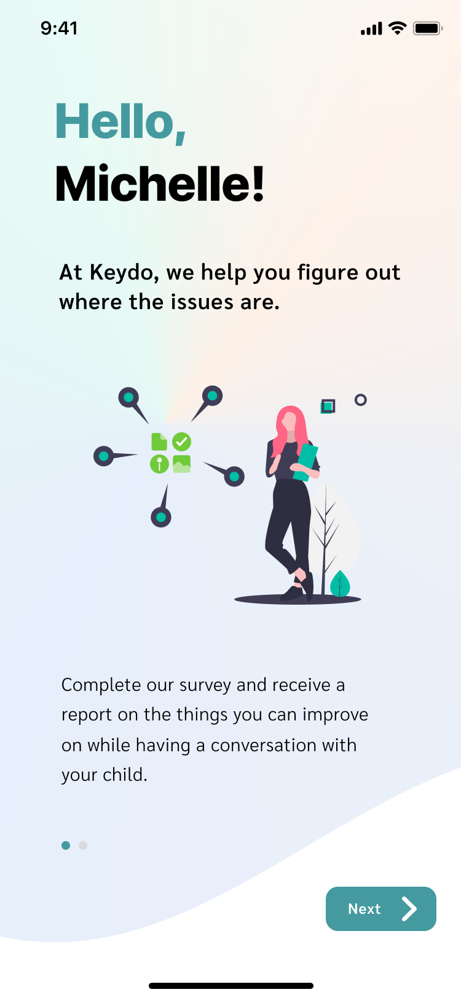

Overview
In an upper level user experience design course, my two teammates and I had the opportunity to help the City of Surrey come up with a solution that could help parents prevent youths from joining gangs.
We designed a mobile application along with keyboard input that helps parents identify their communication weaknesses and provide conversation tips while they interact with their children.
My Roles: User Research / Experience Design / Interface Design
Tools: Figma / Adobe Illustrator / Miro
The Problem
One reason teenagers join gangs is to seek a sense of belonging that cannot be received from home. Lack of communication contributes to the lack of belongingness.
When family members go back home, they tend to browse through their phones as a way to relax from a long day of work and social interaction.
Why do teenagers lack sense of belonging at home?
Through research, our team realized that the interaction and connection between teenagers and parents are decreasing due to the addiction towards phones. The overuse of phones or other household technologies can unknowingly create distance and lead to a lack of emotional and physical interaction between family members. For example, family members might be occupied by their phones, and forget to spend time on chatting with their children. Lack of communication then causes them to neglect their children's psychological health. Teenagers then feel the psychological distance due to fewer interactions with their parents and tend to search for alternative ways to express themselves and find companionship such as joining gangs.
Also, parents may not be communicating with teenagers in the right way
Target Users
We target parents of teenagers who have noticed the communication issues between themselves and their children but are struggling to find a better way to communicate with their children.
The Goal
We discovered that communication generates emotional and psychological effects on individuals in various ways. In order to let teenagers feel more sense of belonging at home, our team decided to encourage more conversations between parents and youths. The way parents communicate with their children within a limited amount of time each day directly affects how teenagers feel psychologically and thereby affect belongingness. We aim to help parents understand where their communication problems might be coming from and coach them to avoid these problems while communicating with their children.
Short term goals:
- to let parents realize the possible factors that might be hindering them from opening up conversations with their children.
- to let parents learn and practice on how to communicate with teenagers better while being guided and assisted.
Long term goals:
We expect that through a decent amount of practice and accumulation of experience, both parents and teenagers can be comfortable enough to communicate with each other and feel a sense of belonging. Therefore parents and teenagers shape a good relationship, and teenagers can express their worries to their parents without worrying about how their parents might judge them.

How does texting contribute to problem solving?
Texting allows us to avoid real eye contact and a person’s facial expression, this can be preferable between individuals who are trying to break the ice and avoid discomfort.
Text messages give the recipient time to digest infromation and the freedom to react, which is a more organized experience that involves less overall pressure.
We want this solution to be effective by teaching parents ways to communicate better with teenagers through online texting first and engage their subsequent face-to-face communication when they feel prepared. Since many teenagers prefer to spend time on their phones than with their parents, we think there is an opportunity to encourage parents to take the initiative by approaching their children through text messaging and open up a conversation under a comfortable environment.
My Roles and Responsibilities
Throughout the research and insight phase, I did a lot of broad level research and listed out all the questions and assumptions that I had related to the problem using a mind-map. Then I managed to categorize all the team members’ research points on Mirror so that we can draw connections, and summarize them into existing problems and “How Might We” questions. Using the value proposition method helped me to organize what parents needed to help them communicate better with teenagers. Then I hosted a mini design sprint with my team to come up with a few solution ideas that aligned with our goal and followed the criteria from our value proposition. Later while working on Keydo’s interface, I made the wireframe, iterated, and refined it into the final mockup.
Keydo Interface Walkthrough
When parents install Keydo, they will see the login page first along with some onboarding information that presents what Keydo offers.
Parents are then encouraged to complete a survey with questions related to parent-children relationship and how parents interact/communicate with their children. The purpose of this survey is to collect data and analyze the potential weaknesses that parents have while communicating with their children.
Parents will then be able to see the survey results which are divided into categories. The purpose here is to allow parents to read the analysis and be able to understand how they might be pushing their children away from them.
Parents will then be able to enable the Keydo keyboard which serves exactly like a normal keyboard but just with some conversational tips that are given based on individual parent's survey results. The system will provide parents with tips that are dedicated to each individual. When parents try to send messages to their children, the keyboard will provide tips and suggestions based on each different parent-child relationship. The keyboard can also suggest topics for parents if parents struggle to start the conversation.
Parents will receive notifications after a while of using Keydo that encourage parents to do more family activities. The purpose is to create opportunities for parents to talk with their children face-to-face while they relax and improve their sense of belonging. Also, we believe that parents will shift their perspectives on how to communicate with their teenage children while they receive help from Keydo, so we encourage parents to retake the survey once in a while for more accurate results and tips.
Project Takeaways
The solution towards a problem might not necessarily need to target the person that is having the problem. For example, teenagers have a high risk of joining gangs, but the solution can target their parents. Understanding why different people have different behaviors can lead me to more insights, and create stronger empathy towards the design. Directly asking our target users about their concerns and understanding why they do what they do is much more substantial than relying just on online research.